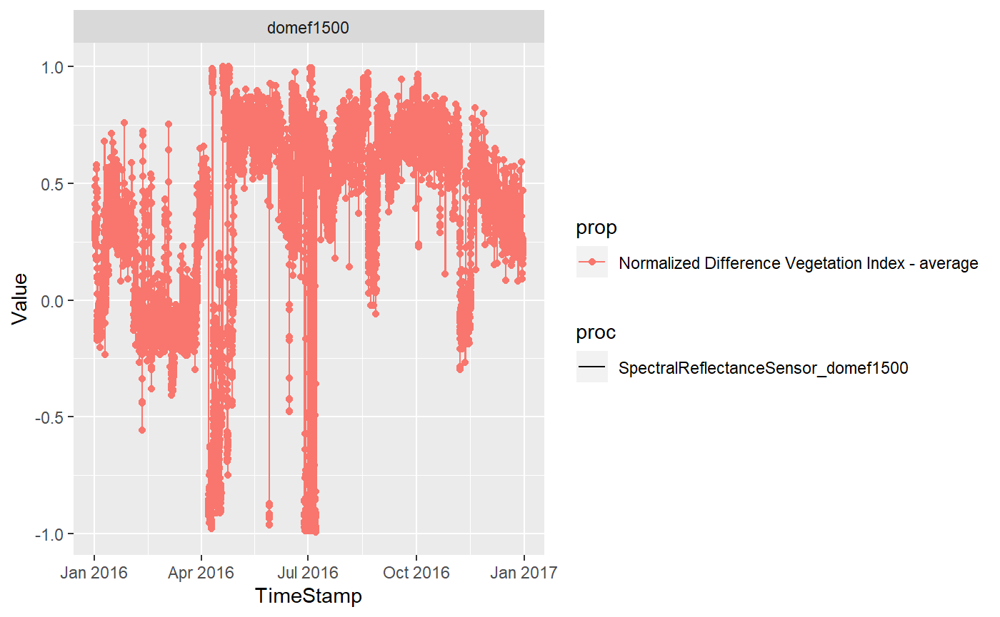

Environmental.RmdFirst of all we have to load the MonalisR Package
Then we have to Set the path to the Database we want to access. If this field is left empty the URL is automatically set to the MONALISA Database
# Set the Path to the SOS JSON
SOS<-setMonalisaURL() # The Default Path for this Function is already the MONALISA Database
SOS## [1] "http://monalisasos.eurac.edu/sos/api/v1/timeseries/"Once connected to the Database we can access the single entries by specifying single subsets in th getMonalisaDB function. We’ve already implemented some functionalities to deal with the data entries
## # A tibble: 353 x 4
## id label uom station$propert~ $$label $geometry$coord~ $$type $type
## <chr> <chr> <chr> <int> <chr> <list> <chr> <chr>
## 1 2060 Air ~ MHzg 220 Laimbu~ <dbl [3]> Point Feat~
## 2 1972 Air ~ % 211 Algund2 <dbl [3]> Point Feat~
## 3 1772 Air ~ % 193 Girlan~ <dbl [3]> Point Feat~
## 4 1978 Air ~ % 212 Gries2~ <dbl [3]> Point Feat~
## 5 1984 Air ~ % 213 Lana6 <dbl [3]> Point Feat~
## 6 1760 Air ~ % 191 Nals2O~ <dbl [3]> Point Feat~
## 7 1766 Air ~ % 192 Neumar~ <dbl [3]> Point Feat~
## 8 1990 Air ~ % 214 Terlan3 <dbl [3]> Point Feat~
## 9 1784 Air ~ % 195 Terlan~ <dbl [3]> Point Feat~
## 10 1996 Air ~ % 215 Tramin~ <dbl [3]> Point Feat~
## # ... with 343 more rows## chr [1:31] "LaimburgProvince" "Algund2" "Girlan1Lamm" ...## chr [1:76] "Air Humidity - 10 minute average" ...## chr [1:74] "MeteoSensors_LaimburgProvince" "MeteoSensors_Algund2" ...# Get a combined list of available DOI, PRocedures and Propertoes by ID
mnls_comb<-getMonalisaDB(url=SOS,subset = "combined")
mnls_comb<-as_tibble(mnls_comb)
print(mnls_comb)## # A tibble: 353 x 4
## id foi proc prop
## <chr> <chr> <chr> <chr>
## 1 2060 LaimburgProvince MeteoSensors_LaimburgProv~ Air Humidity - 10 ~
## 2 1972 Algund2 MeteoSensors_Algund2 Air Humidity - 5 m~
## 3 1772 Girlan1Lamm MeteoSensors_Girlan1Lamm Air Humidity - 5 m~
## 4 1978 Gries2NeufeldGreif~ MeteoSensors_Gries2Neufel~ Air Humidity - 5 m~
## 5 1984 Lana6 MeteoSensors_Lana6 Air Humidity - 5 m~
## 6 1760 Nals2OberauCarli MeteoSensors_Nals2OberauC~ Air Humidity - 5 m~
## 7 1766 NeumarktStiermoos MeteoSensors_NeumarktStie~ Air Humidity - 5 m~
## 8 1990 Terlan3 MeteoSensors_Terlan3 Air Humidity - 5 m~
## 9 1784 Terlan3a MeteoSensors_Terlan3a Air Humidity - 5 m~
## 10 1996 Tramin13er MeteoSensors_Tramin13er Air Humidity - 5 m~
## # ... with 343 more rowsmnls_geom <- getMonalisaDB(url=SOS,subset = "geom")
mnls_geom <- as_tibble(mnls_geom)
print(mnls_geom)## # A tibble: 31 x 3
## FOI LAT LON
## <chr> <chr> <chr>
## 1 LaimburgProvince 11.288711 46.382457
## 2 Algund2 11.123873 46.685781
## 3 Girlan1Lamm 11.279533 46.455895
## 4 Gries2NeufeldGreifensteinerweg 11.280283 46.501757
## 5 Lana6 11.151788 46.616553
## 6 Nals2OberauCarli 11.205704 46.560132
## 7 NeumarktStiermoos 11.262795 46.304704
## 8 Terlan3 11.228543 46.541054
## 9 Terlan3a 11.228615 46.540983
## 10 Tramin13er 11.244507 46.329177
## # ... with 21 more rowsNow if we want to Download the Data we can access all of it by specifying the entries we can see with the prior functions to the downloadMonalisa function:
# Download
foi1 <-"domef1500"
proc1 <-""
prop1 <-"Normalized Difference Vegetation Index - average"
s <- "2016-01-01 00:00"
e <- "2016-12-31 00:00"
down<-downloadMonalisa(starturl=SOS,datestart=s,dateend=e,foi=foi1,procedure=proc1,property=prop1)
down## # A tibble: 1 x 5
## id foi proc prop Data
## <fct> <fct> <fct> <fct> <list>
## 1 1877 domef1~ SpectralReflectance~ Normalized Difference Ve~ <tibble [17~The Data is stored in “nested tibbles”. One row contains a set of Lists. Use the tidyr::unnest function to enhance the dimensionality and to visualize the complete dataset
For the Leaflet graphic we created a simple interface visualizing
Simple Graphics with GGplots are also possible.
library("ggplot2")
ggplot(dat1,aes(TimeStamp,Value,col=prop,lty=proc))+geom_line()+geom_point()+facet_wrap(.~foi)